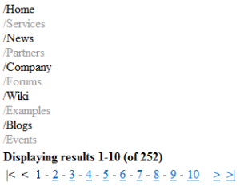

DataPager
The DataPager control can ensure paging for the following CMSControls:
You do not need to use the DataPager separately, it is built into the above controls. You can enable or disable the DataPager though the EnablePaging property.
Note: If possible, it is recommended to use the newer UniPager control instead.
Getting started
The following is a step-by-step tutorial that shows how to use the DataPager control with a CMSRepeater control that displays all pages (menu items) in the system:
Create a new Web form somewhere in your web project.
Drag the CMSRepeater control from the toolbox onto the form.
Set the following properties for the CMSRepeater:
Path: /%
ClassNames: cms.menuitem
EnablePaging: True
This tells the CMSRepeater which page types to read and enables the DataPager.
Add the code marked by the CMSRepeater templates comments between the <cms:CMSRepeater> tags. The overall code of the CMSRepeater control should look like this:
<cms:CMSRepeater ID="CMSRepeater1"runat="server"Path="/%"ClassNames="cms.menuitem"EnablePaging="true"><%-- CMSRepeater templates ---------------------------------------------------------- --%><ItemTemplate><%# HTMLHelper.HTMLEncode( Convert.ToString(Eval("NodeAliasPath"))) %></ItemTemplate><AlternatingItemTemplate><font color="#999999"><%# HTMLHelper.HTMLEncode( Convert.ToString(Eval("NodeAliasPath"))) %></font></AlternatingItemTemplate><SeparatorTemplate><br /></SeparatorTemplate><%-- CMSRepeater templates ---------------------------------------------------------- --%></cms:CMSRepeater>This sets the templates used by the CMSRepeater to display the pages (menu items). The control dynamically replaces the <%# ... %> tags with values of the currently displayed record. This is then repeated for every record in the data source.
Save the web form.
Right-click the web form in the Solution explorer and select View in Browser.
The control displays a pager under the list:

Configuration
You can access the properties of the DataPager through the PagerControl property of the connected listing control, for example:
CMSRepeater1.PagerControl.BackText = "<-";|
Common pager control properties |
Description |
|
CurrentPage |
The current page number. |
|
MaxPages |
Maximum number of pages that the control displays. |
|
PageCount |
The current number of pages (read only). |
|
PageSize |
The number of displayed items per page. |
|
DataPager properties |
Description |
Sample value |
|
DataSource |
Can be used to access the object of the pager's data source. |
|
|
BackNextDisplay |
Back/Next display mode. |
"Buttons" |
|
BackNextLocation |
Back/Next location. |
"Right" |
|
BackText |
Back button/hyperlink text. |
|
|
FirstText |
First button/hyperlink text. |
|
|
HideOnSinglePage |
If true, the pager is hidden if only one page is displayed. |
|
|
IgnoreQueryString |
Indicates whether querystring parameters should be ignored. |
|
|
InsertKeys |
Adds keys to the querystring. |
|
|
InsertToUrl |
Indicates whether inserting querystring keys is enabled. |
|
|
LabelText |
Label text. |
|
|
LastText |
Last text. |
|
|
NextText |
Next button/hyperlink text. |
|
|
PagedData |
Gets the data to be paged. |
|
|
PageNumbersDisplay |
Page numbers display mode. |
"Numbers" |
|
PagerPosition |
The position of the pager relative to the paged data. |
"Bottom" |
|
PagingMode |
Determines the type of the used paging parameter. It can either be passed through the URL (QueryString) or through postback (PostBack). |
"PostBack" |
|
QueryStringKey |
Query parameter name for the page index. |
"pagenumber" |
|
RecordEnd |
Index of the last record on the current page. |
|
|
RecordStart |
Index of the first record on the current page. |
|
|
RemoveFromUrl |
Indicates whether removing querystring keys is enabled. |
|
|
RemoveKeys |
Removes keys from the querystring. |
|
|
ResultsFormat |
Results text format. |
"Displaying results {0}-{1} (of {2})" |
|
ResultsLocation |
Results location. |
"Top" |
|
ShowFirstLast |
Indicates whether first/last buttons should be displayed. |
|
|
ShowLabel |
Indicates whether labels should be displayed. |
|
|
ShowPageNumbers |
Indicates whether page numbers should be displayed. |
|
|
SliderSize |
Slider size. |
|
|
TotalRecords |
Total amount of data source records. |
|
|
UseSlider |
Indicates whether the slider should be used. |
Appearance and styling
You can modify the appearance of the DataPager through the following properties or the CSS classes that they specify:
|
DataPager property |
Description |
|
BackNextButtonStyle |
Back/Next button style. |
|
BackNextLinkSeparator |
Back/Next link separator. |
|
BackNextStyle |
Back/Next style. |
|
ControlCssClass |
CSS class of the pager control. |
|
LabelStyle |
Label style. |
|
PageNumbersStyle |
Page numbers style. |
|
PageNumbersSeparator |
Page numbers separator. |
|
PagerControlStyle |
Pager control style. |
|
PagerHTMLAfter |
HTML code to be rendered after the pager. |
|
PagerHTMLBefore |
HTML code to be rendered before the pager. |
|
PagerNumberAreaClass |
CSS class of the number area. |
|
ResultsStyle |
Results style. |
|
SectionPadding |
Section padding. |
|
SelectedClass |
CSS class of the selected page. |
|
UnselectedClass |
CSS class of unselected pages. |